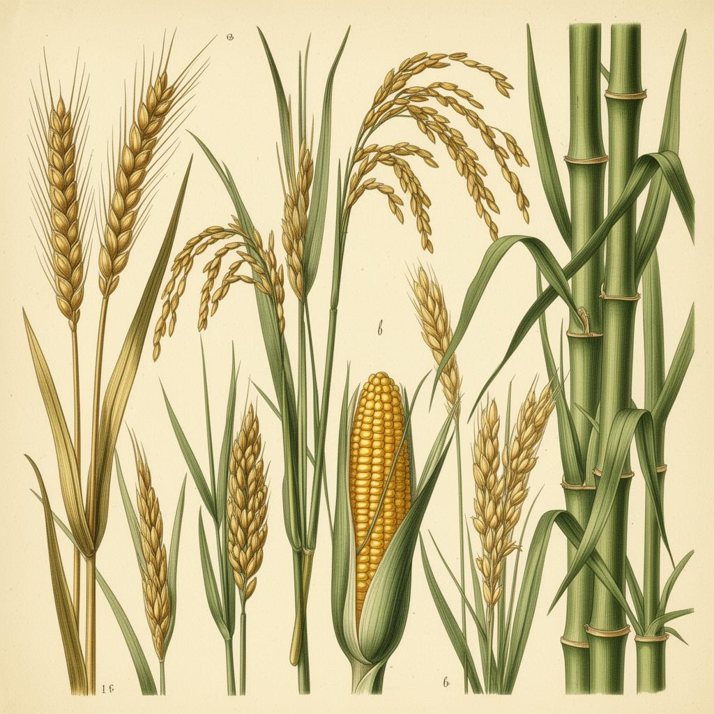

Da espiga ao pão, do bambu à savana — a família de plantas mais generosa da Terra.
As gramíneas formam a família botânica Poaceae (antiga Gramineae), com cerca de 12.000 espécies catalogadas em mais de 780 gêneros. Estão presentes em praticamente todos os continentes — do Ártico aos trópicos — e cobrem aproximadamente um quinto da superfície vegetal da Terra.
Toda gramínea é monocotiledônea: sua semente possui apenas um cotilédone, suas folhas têm nervuras paralelas e suas raízes formam uma cabeleira de fios finos, chamada de raiz fasciculada (em feixe).
É da família das gramíneas que vem grande parte do que comemos todos os dias: trigo, arroz, milho, aveia, cevada, centeio, cana-de-açúcar e até o bambu. Sem elas, o mundo simplesmente não seria o mesmo.

Quatro características reunidas distinguem essa família de qualquer outra planta no campo.
O colmo é cilíndrico, geralmente oco entre os nós sólidos — o mesmo desenho do bambu, do trigo e da cana.
Folhas estreitas, em forma de fita, com nervuras paralelas e uma bainha que abraça o caule.
Flores pequenas, sem pétalas vistosas, agrupadas em espigas ou panículas — polinizadas pelo vento.
O fruto é um grão único, em que casca e semente são fundidos — o famoso grão de trigo, arroz ou milho.
Distribuídas em mais de 780 gêneros — uma das maiores famílias do reino vegetal.
É a fração do planeta coberta por gramíneas — campos, savanas, pastagens e plantações.
Mais da metade da energia que a humanidade consome vem diretamente de três gramíneas: arroz, trigo e milho.
A resposta está em um detalhe quase invisível, escondido bem rente ao solo.
Na maioria das plantas, o crescimento acontece nas pontas dos ramos. Nas gramíneas é diferente: a zona de crescimento — chamada de meristema intercalar — fica logo acima dos nós, próxima ao solo.
Por isso, quando um boi pasta ou um cortador de grama passa, a ponta da folha vai embora, mas o tecido que produz novas células permanece intacto, rente à terra. A folha simplesmente volta a crescer.
Esse é o segredo que torna possível o pastoreio, a manutenção dos gramados e a colheita repetida do mesmo capim.
Por serem monocotiledôneas, as gramíneas não desenvolvem uma raiz principal pivotante. Em vez disso, formam um conjunto denso e ramificado de raízes finas e do mesmo tamanho, partindo da base do caule.
Esse sistema é chamado de raiz fasciculada (ou em cabeleira). Ele segura firmemente o solo — por isso as gramíneas são tão usadas no controle da erosão — e permite absorver água e nutrientes de uma grande área superficial.
As gramíneas dividem-se segundo o tempo que vivem — algumas cumprem todo o seu ciclo em uma estação, outras atravessam décadas.
Gramíneas anuais nascem, crescem, florescem, produzem sementes e morrem dentro de um único ano agrícola. Toda primavera é preciso replantá-las — mas em troca, oferecem grãos abundantes em pouco tempo.
Gramíneas perenes mantêm a parte subterrânea — raízes e rizomas — viva ano após ano, rebrotando a cada estação. São a base das pastagens e dos gramados, e algumas vivem décadas.
Olhe ao redor da cozinha, da padaria, do galpão: provavelmente metade do que você vê começou em forma de espiga.
Trigo, centeio e cevada — os três grãos clássicos da panificação ao redor do mundo.
Trigo · Centeio · CevadaO capim-vassoura (sorgo-vassoura, Sorghum vulgare var. technicum) tem panículas longas e flexíveis, perfeitas para varrer.
Sorgo-vassouraO bambu, gramínea de caule lenhoso, é leve, resistente e flexível — vara de pesca por excelência.
BambuProteína que dá elasticidade à massa do pão. Presente sobretudo no trigo, e também no centeio e na cevada.
TrigoMilho (uísque bourbon, cachaça de milho) e cevada (uísque, cerveja) são as principais matérias-primas.
Milho · CevadaVinda do trigo, do arroz e da aveia, é usada como cama de animais, cobertura, artesanato e telhados.
Trigo · ArrozPrato tradicional feito com grãos de milho branco cozidos no leite com açúcar — pura herança das gramíneas.
MilhoXarope escuro obtido pela fervura do caldo da cana-de-açúcar, muito apreciado em receitas rurais.
Cana-de-açúcarFeito com flocos de aveia cozidos em leite ou água — o clássico café da manhã quente e nutritivo.
AveiaO amido de milho (e também o de arroz) é a base de mingaus, molhos, papinhas e pós industriais.
Milho · ArrozExtraído da cana-de-açúcar (no Brasil) — gramínea que armazena sacarose no caule.
Cana-de-açúcarResultado da moagem do trigo após a remoção do farelo e do gérmen — base de pães, bolos e massas.
TrigoPão, mingau, canjica, melado, cerveja, uísque, açúcar, amido. Toda manhã, milhões de mesas começam com algo que cresceu numa espiga.
O trigo viaja como farinha branca até os fornos das padarias. A aveia se transforma em flocos para mingaus. O milho vira fubá, canjica, pamonha e amido. A cana entrega açúcar e melado. É a generosidade silenciosa das gramíneas.
A cana (Saccharum officinarum) é uma gramínea perene de origem asiática que encontrou no Brasil seu maior produtor mundial. De seus colmos doces extraem-se açúcar, melado, rapadura, cachaça e o etanol que move milhões de veículos.
Cada hectare cultivado pode produzir mais de 80 toneladas de cana — energia condensada, fotossíntese transformada em economia.
Pode parecer árvore, mas o bambu é uma gramínea — a maior do mundo. Algumas espécies crescem até 90 cm em um único dia, e podem ultrapassar 30 metros de altura.
Material de construção, vara de pescar, andaime, móvel, papel, instrumento musical, alimento (broto de bambu). Poucos seres vivos oferecem tantas utilidades à humanidade.
Sem gramíneas, não há agricultura moderna, não há pecuária, não há pão na mesa.
As gramíneas são, sem rival, a família vegetal mais importante para a economia humana:
As gramíneas são a família dominante nos ecossistemas de campos abertos — pradarias, estepes, pampas e, principalmente, nas savanas.
É na savana (no Brasil chamada de Cerrado) que essa família atinge sua expressão máxima: enormes extensões cobertas por capins altos, intercalados por árvores esparsas, sustentando a maior diversidade de grandes herbívoros do planeta.
Pradarias norte-americanas, pampas sul-americanos, savanas africanas, estepes asiáticas — todos esses biomas são reinos das gramíneas.
Desde o terceiro dia da Criação, as gramíneas aparecem na Palavra como sinal de provisão, fragilidade e fartura.
"E disse Deus: Produza a terra erva verde, erva que dê semente, árvore frutífera que dê fruto segundo a sua espécie, cuja semente está nela sobre a terra. E assim foi."Gênesis 1:11
"A erva seca, e a flor cai; mas a palavra do nosso Deus subsiste eternamente."Isaías 40:8
"Faz brotar a erva para o gado, e a verdura para o serviço do homem, para que tire da terra o pão."Salmos 104:14
"Se, pois, Deus assim veste a erva do campo, que hoje existe e amanhã é lançada no forno, quanto mais a vós, homens de pequena fé?"Mateus 6:30
Um guia para realizar os trabalhos de campo.
Escolha uma semente fácil — trigo, aveia, milho ou grama. Plante em vaso ou canteiro, regue regularmente e observe.
Monte um pequeno herbário com folhas, sementes e, se possível, flores (espigas) de 10 gramíneas diferentes encontradas perto de casa.
Coisas surpreendentes sobre a família mais importante do reino vegetal.
Algumas espécies de bambu já foram registradas crescendo até 91 cm em um único dia — quase 4 cm por hora.
Arroz, trigo e milho — sozinhos — fornecem mais da metade de todas as calorias consumidas pela humanidade.
A raiz fasciculada forma uma malha densa que combate a erosão. Por isso são usadas em encostas, margens de rios e gramados.
Por isso suas flores são discretas — não precisam atrair insetos. O vento faz todo o trabalho, e o pólen viaja quilômetros.